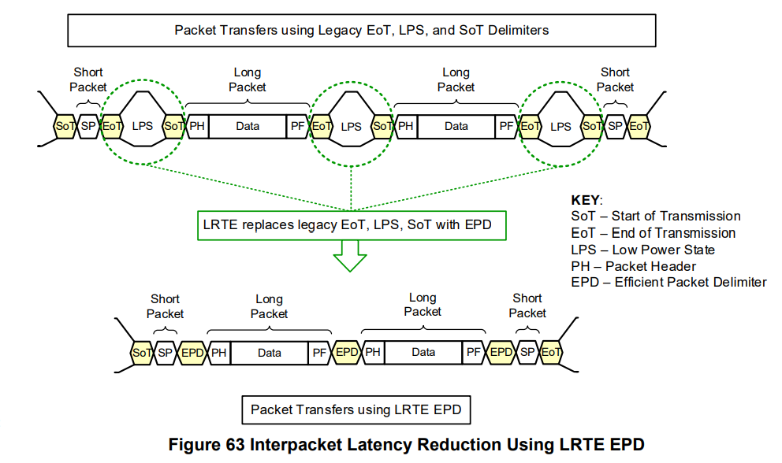
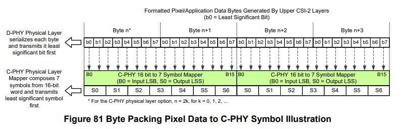

MIPI-CSI-3
本文最后更新于：2024年5月1日 晚上
- 本篇博客接着MIPI-CSI-2继续介绍CSI协议中Low Level Protocol (LLP)相关内容。
1. Latency Reduction and Transport Efficiency (LRTE)
- LRTE是CSI-2可选特性，能够促使系统达到最优的传输效率。LRTE主要有两部分
- Interpacket Latency Reduction (ILR)
- Enhanced Transport Efficiency
1.1 ILR
根据D-PHY和C-PHY的物理规范，CSI-2短包之间和长包之间通过EOT、LPS、SOT包分隔符分开。
一些高级图像会通过降低这些分隔符的开销，来提升速度。
如下图所示，将EOT、LPS、SOT包分隔符替换为EPD(Efficient Packet Delimiter)。
- EPD避免了HS-LPS-HS 的转换。
 EPD由PHY层 和/或 LLP层提供的元素构成。
- 其中PHY层产生的EPD元素被称为 Packet Delimiter Quick(PDQ).
- 其中LLP层产生的EPD元素被称为Spacers. 如果一个Lane插入了Spacers，那么所有的Lane都需要插入Spacers.
LRTE要求EPD应在高速传输模式下最后一个包数据之后插入，不允许在EOT之后再插入EPD。
- 但存在某些特殊情况，允许在EOT后插入Spacers，但不可插入PDQ。
1.2 C-PHY EPD
C-PHY EPD中的PDQ是由7-UI Sync Word构成的。
PDQ由TX 端 PHY层生成，RX端 PHY层解析。
- TX端，在PHY层的PPI接口处应重复使用
TxSendSyncHS，以通知C-PHY生成PDQ控制码。 - RX端，在PHY层接收到PDQ控制码时，应在PPI处重复使用
RxSyncHS，以通知LLP层。
- TX端，在PHY层的PPI接口处应重复使用
Spacer Word 数量可通过寄存器配置指定，Space Word的值为0xFFFF。
1.3 D-PHY EPD
在D-PHY下，有两种EPD选项。但无论哪种选项，当打开EPD使能后，都需要用Filler字节对齐所有Lane上的数据，Filler字节的值是0x00.
D-PHY EPD Option 1
传输模式如下图所示。
PDQ是由D-PHY中的HS-Idle构成的。
- 注意：HS-Idle并不被ALP模式所支持。
- TX端，在PHY层的PPI接口处应重复使用
TxSendPDQHS，以通知D-PHY生成PDQ控制码。 - RX端，在PHY层接收到PDQ控制码时，应在PPI处重复使用
RXDetectPDQHS，以通知LLP层。
Spacers仍是由LLP生成的，其字节值为0xFF.
- DPHY RX端接收到数据包之后，会先将数据加载到缓冲区中，之后再处理传递至LLP层。
- 因此在数据包传输之间插入Spacers，以便RX端足够的时间去处理接收到的数据，避免数据丢失。
D-PHY EPD Option 2
传输模式如下图所示。
该模式下只有LLP层生成的Spacer，没有PHY层生成的PDQ 来实现包间隔。
由于Option 1中提到，HS-Idle并不被ALP模式支持，但Option 2可以被ALP模式支持。
在连续传输数据包时，PDQ还可用作数据包之间的分界。
- 但Option 2模式下，数据包的间隔只有Spacers，所以在大量数据包连续传输时，可能影响数据传输的稳定性和准确性。
DPHY EPD Option 2同样也可应用于C-PHY/D-PHY Escape模式下LPDT 传输。
Option 2 下，无论是高速模式还是LPDT模式，EPD都不能在EoT/EoTp之后插入。
1.4 Using ILR and Enhanced Transport Efficiency Together
如下图所示，同时使用EPD和ALPS。
2. Data Scrambling
数据加扰(Data Scrambling) 目的是减轻EMI和RF自干扰的影响，数据加扰主要是使用了一种数据随机化技术。
如下图所示，数据加扰被应用到每个Lane。
2.1 D-PHY Scrambling
如下图所示，D-PHY下，使用两条Lane进行传输，突发传输两个数据包。
- 在SoT之后，HS-ZERO和HS-Sync会被发送到Lane中。
- 加扰主要通过LFSR电路实现，用于产生伪随机序列，与串行输入的数据进行异或操作。
- 在每次传输开始时，需要对LFSR seed 进行初始化。
- 在Burst起始位置，紧跟HS Sync之后第一个要发送字节之前，由D-PHY立即生成初始化值。
- 在EDP Option1 下，EPD HS-Idle发送之后，立即生成初始化值。
- 在EDP Option2 下，突发传输的包之间不需要再次初始化。
2.2 C-PHY Scrambling
如下图所示，C-PHY下，使用两条Lane进行传输，突发传输两个数据包。
在SoT之后，Preamble和Sync被发送到Lane上。
每条Lane 的LFSR总是在Sync Word被发送时，初始化LFSR seed。
Different Seed for Sync Word
在某些场景下，传输的图像可能带有相同/高度相似的长包包头和相同的像素数据的长包。
如果每个包传输开始LFSR都被初始化相同的seed值，则加扰后的伪随机序列会同样高速相似，导致信号随机性减少。
为了减轻这个问题，TX端每次发送sync word时，会选择不同的Sync Type，用于通知RX端使用了哪个Starting Seed。
下表为C-PHY中定义的五种Sync Type，而CSI-2协议只会使用Sync Type前面四种。
- 如果只使用一个seed值，那么这个seed值应是seed3。
扰码器/解码器 结构
下图为单条Lane中扰码器/解码器结构。
由LFSR产生的PRBS（Pseudo-Random Binary Sequence）伪随机数被用作seed index，并根据Sync Type选择合适的seed初始值。
下图为多条Lane中扰码器/解码器结构示意图。
扰码电路的具体实现如下电路所示。
其中PktD0-7 为输入一个Byte的数据，其与LFSR生成的PRBS序列G(x)进行异或，加扰运算，得到输出发送数据TxD0-7.

3. 传输数据格式
3.1 Packet Data Payload Size Rules
- 对于YUV/RGB/RAW 数据类型，一个长包包含一行的图像数据。
- 如果数据包的虚拟通道号相同，且都属于同一帧，那么相同的Data Type的长包长度应相同。YUV420例外。
- 对于用户自定义的数据类型(Data Type)、USL Data Type 以及 SROI Data Type，长包的长度可以是任意的，包与包之间的间隔也是可变的。
- 对于所有的Data Type，长包中的有效数据长度必须是8 bits的整数倍。
- 有些Data Type的数据长度可能不足8 bits整数倍，可以通过填充额外的像素到有效数据的结尾，以满足要求。
3.2 帧格式示例
CSI-2协议中一共给出了以下三种帧格式示例。
常见帧格式
Digital Interlaced Video
Digital Interlaced Video with Accurate Synchronization Timing Information

3.3 Data Interleaving
- CSI-2协议支持交错传输不同数据类型的数据包，主要通过以下两种方式进行交错传输。
3.3.1 Data Type Interleaving
在视频数据传输时，可以使用Data Type来进行标识，交错传输不同数据格式的数据包。
RX端会在接收到的数据包头中解析该数据格式类型，如下图所示。
他们是相同虚拟通道的数据包，无论Data Type值是什么，他们都共享相同的 帧开始/结束 和 行开始/结束 同步信息。
根据定义，相同虚拟通道内所有处于Frame Start和Frame End包之间的包，无论Data Type是什么，都属于同一帧。
下图为Packet Level交错数据传输。
下图为Frame Level交错数据传输。
3.3.2 Virtual Channel Identifier Interleaving
这种方式允许一条数据流中存在不同的数据类型，他们在不同的虚拟通道上。
每个虚拟通道有自己的Frame Start和Frame End包。
不同的虚拟通道可能有不同的帧率，即使不同虚拟通道中可能存在相同Data Type的数据，仍属于不同数据帧。
另外，每条虚拟通道还允许使用Data Type Interleaving.
- 因此，RX端可以通过检测VCI以及Data Type值的组合情况，来解析不同的数据包。
3.4 Data Format
D-PHY to C-PHY
对于D-PHY，序列中的字节是按照LSB优先的方式串行传输。
对于C-PHY，连续两个字节被编码为7个5bit的symbol，之后再按照LSS(Least Significant Symbol)优先的方式进行传输。

通用8bit长包数据类型如下图所示。
- Null 和 Blanking Data
- 对于null和blanking数据类型，接收器需要忽略包中有效数据的内容。
- Null包没有任何含义。
- Blanking包可能有专门用途，比如在一条ITU-R BT.656风格的视频流中，它作为帧之间的blanking lines。
- Embedded Information
- 如下图所示，在每一帧图像数据的开头和结尾处，有可能嵌入额外信息的行。
- 对于这些额外嵌入信息的行，在数据传输时，需要标识为特殊的Data Type，即0x12.
- 在帧的开始处可能存在0行或多行内嵌数据。这些行被称为帧头（frame header）。
- 在帧的结尾处可能存在0行或多行内嵌数据。这些行被称为帧尾（frame footer）。
- Null 和 Blanking Data